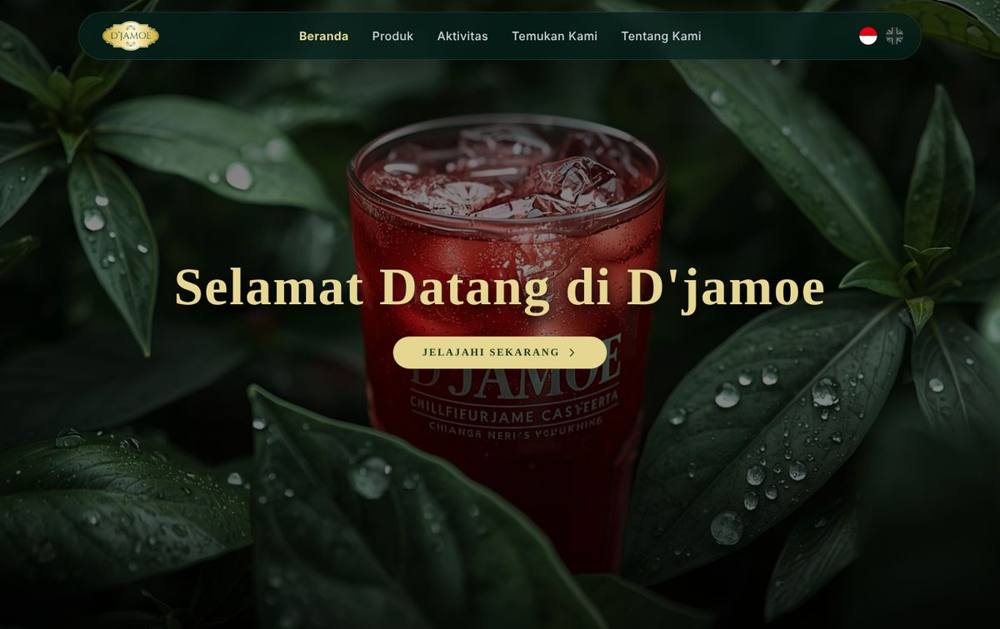
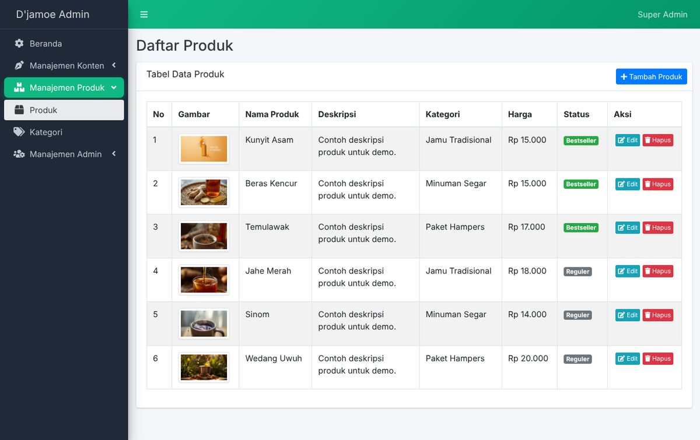
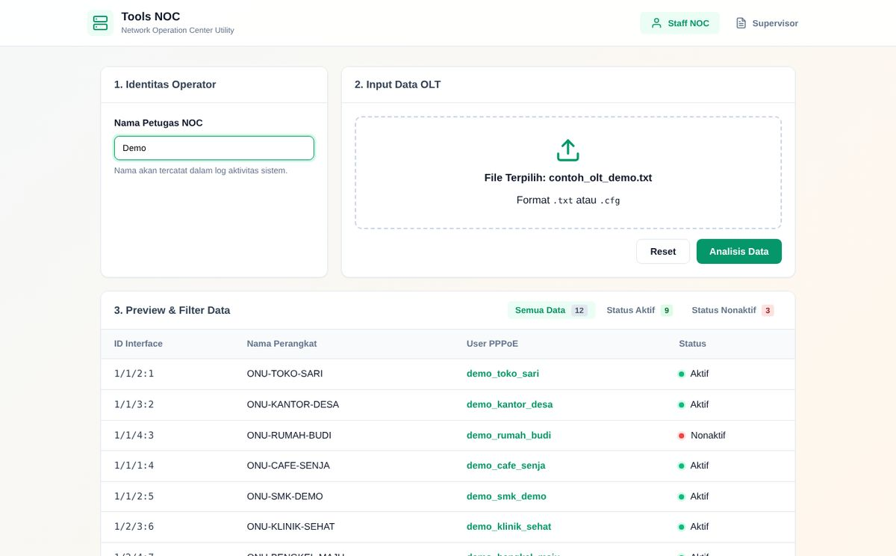
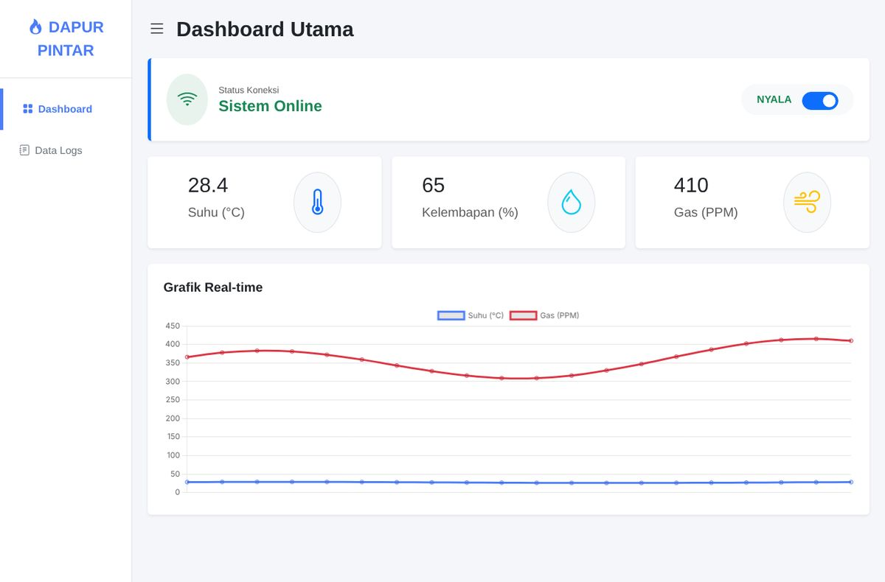
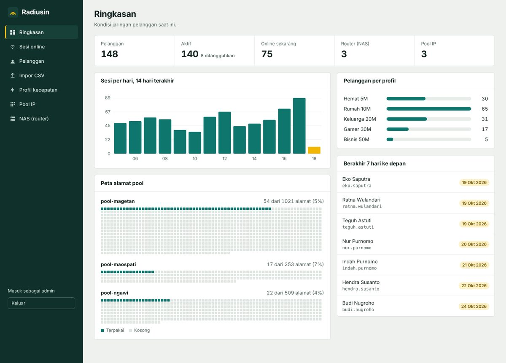
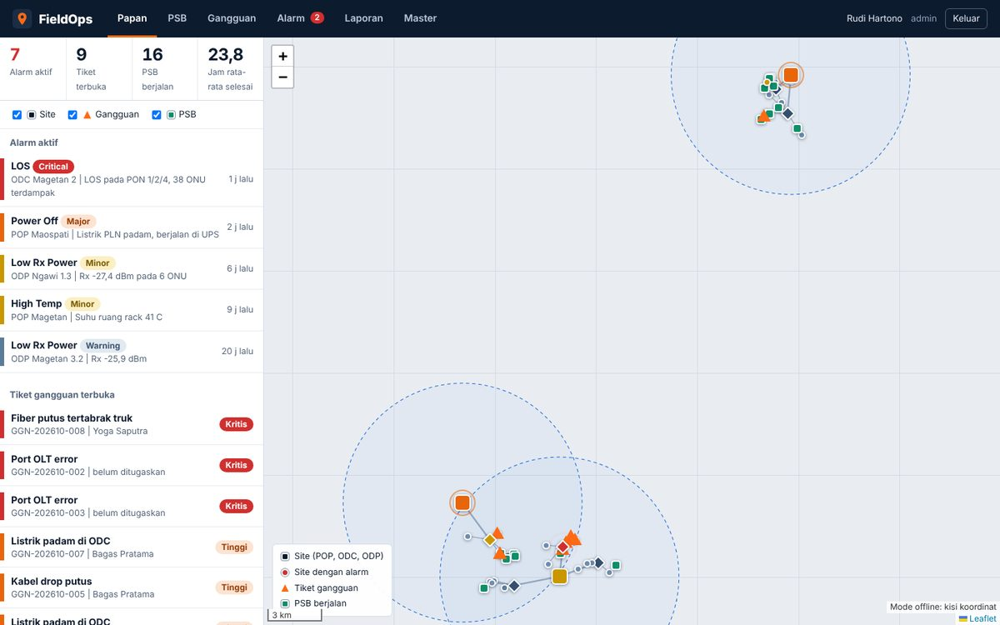
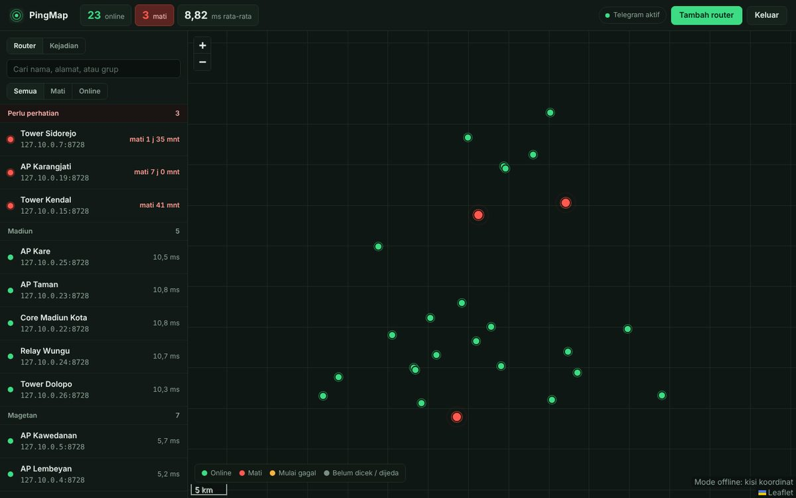
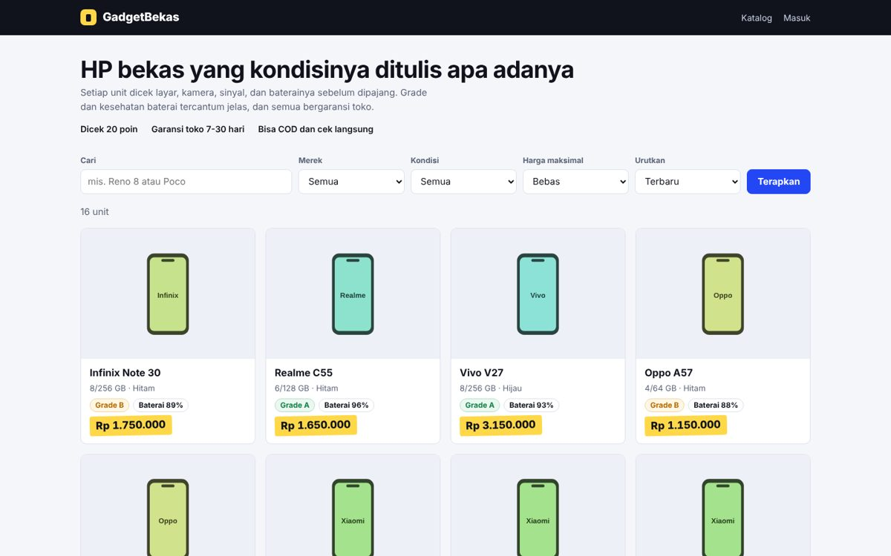
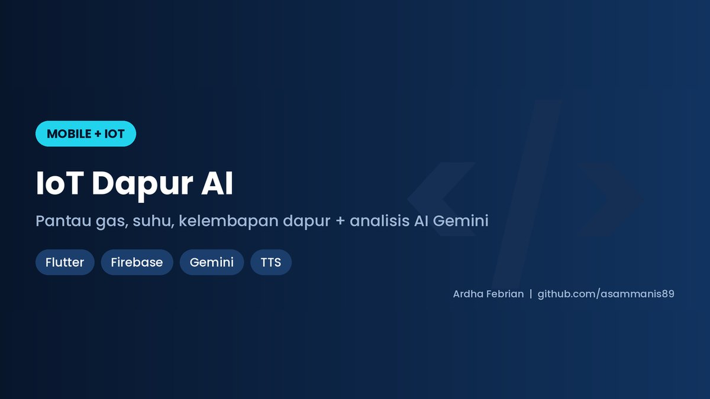
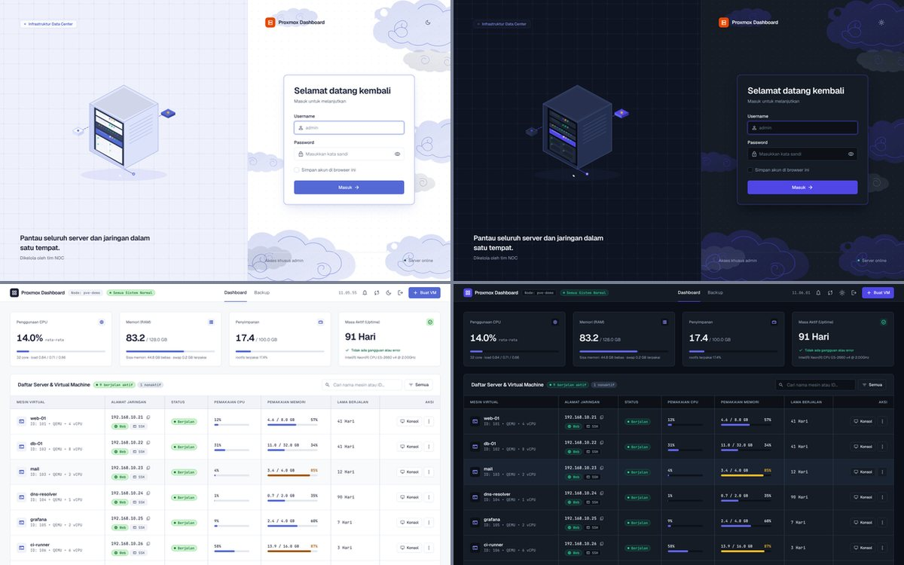

Website dan server yang dijaga seperti jaringan kantor
Saya Ardha, pembuat website dan pengelola VPS Linux untuk UMKM, sekolah, dan bisnis lokal. Sehari-hari saya bekerja di NOC, pusat pemantauan jaringan, jadi menjaga sistem tetap hidup sudah jadi kebiasaan.
Layanan dan harga
Harga awal, final menyesuaikan kebutuhan. Konsultasi dan penawaran gratis.
Setup VPS Linux
Install Ubuntu dan aaPanel, pasang SSL, atur firewall dan pengamanan dasar, serta jadwal backup.
Pembuatan website
Website Laravel atau Node.js yang tampil baik di HP, sudah termasuk domain dan VPS 1 tahun. Bisa dua bahasa (Indonesia dan Inggris) dan dilengkapi dashboard admin agar Anda bisa mengubah isi halaman sendiri.
Tools dan otomasi
Aplikasi yang membuat laporan PDF atau Word otomatis, mengolah data, atau bot pengumpul data, dibuat sesuai cara kerja usaha Anda.
Pengujian aplikasi dan keamanan
Blackbox dan whitebox testing dengan laporan berisi skenario uji, hasil, bukti, dan saran perbaikan. Uji keamanan hanya dilakukan pada sistem yang diizinkan tertulis oleh pemiliknya.
Pengelolaan bulanan
Pemantauan server, backup rutin, pembaruan keamanan, dan bantuan teknis lewat WhatsApp.
Proyek yang sudah saya kerjakan
Beberapa bisa dilihat langsung, kodenya terbuka di GitHub. Dashboard Proxmox, Radiusin, FieldOps, dan Djamoe Multi berupa studi kasus: repo-nya berisi tangkapan layar dengan penjelasan cara kerja, tanpa kode.

Website djamoemadiun.co.id
Website bisnis lokal lengkap dengan domain dan VPS, saya kelola sampai produksi.
Laravel, Ubuntu, aaPanel
Company profile dua bahasa
Website Indonesia dan Inggris dengan dashboard admin untuk produk, artikel, outlet, dan pengguna.
Laravel 9, AdminLTE, MySQL
Laporan PDF terenkripsi otomatis
Membaca file konfigurasi OLT dengan regex, merangkum per status pelanggan, lalu mengunci laporannya dengan AES-256.
Node.js, PDFKit, qpdf
Dashboard IoT web
Panel web dengan grafik langsung dan catatan kejadian untuk sensor gas, suhu, dan kelembapan.
JavaScript, Chart.js, Firebase
Radiusin: manajemen RADIUS untuk ISP
Kelola router, pool IP otomatis, profil kecepatan, pelanggan, dan sesi online, lengkap dengan impor CSV. Semua langsung terbaca oleh FreeRADIUS.
Node.js, PostgreSQL, FreeRADIUS, Docker
FieldOps: operasional lapangan ISP
Pemasangan baru, tiket gangguan, alarm jaringan, dan peta lokasi dalam satu papan kerja. Laporan Word dan PDF jadi dengan satu klik.
Node.js, SQLite, Leaflet, docx, PDFKit
PingMap: pantau router di peta
Cek ping atau port router secara berkala, tampilkan di peta, dan kirim pesan Telegram saat ada yang mati atau sudah pulih.
Node.js, SQLite, Leaflet, Telegram Bot API
GadgetBekas: toko HP bekas
Katalog yang bisa difilter dengan grade dan kesehatan baterai, tombol tanya lewat WhatsApp, dan halaman admin untuk stok, foto, dan harga.
Laravel 12, SQLite
IoT Dapur AI
Aplikasi HP yang memantau gas, suhu, dan kelembapan dapur, memberi notifikasi suara, dan analisis dari AI.
Flutter, Firebase, Gemini
Dashboard monitoring server Proxmox
Tool internal untuk tim NOC: memantau CPU, RAM, disk, dan status VM secara real-time, lebih jelas dari tampilan bawaan.
Node.js, Proxmox APICara kerja
Dari pertanyaan pertama sampai selesai, Anda selalu tahu sedang di tahap mana.
- KonsultasiCeritakan kebutuhan lewat WhatsApp, gratis.
- PenawaranHarga dan jadwal jelas, DP 50%.
- PengerjaanAnda dikabari di setiap tahap penting.
- RevisiPerbaikan sampai sesuai kesepakatan.
- Serah terimaPelunasan, lalu panduan penggunaan.
Tentang saya
Saya Ardha Febrian Muqorrobin, lulusan D3 Teknologi Informasi Politeknik Negeri Madiun. Saya membuat website dan tools sebagai freelancer sejak 2024, dan sejak September 2026 bekerja di NOC penyedia internet.
Latar belakang jaringan membuat saya terbiasa memikirkan hal yang sering terlewat saat website dibuat: keamanan, backup, dan apa yang terjadi kalau server mati tengah malam.
Dari situ saya juga membuat tools untuk kebutuhan operasional penyedia internet: manajemen RADIUS dan pool IP, pemantau router dengan notifikasi Telegram, pencatatan pekerjaan lapangan beserta laporannya, dan dashboard monitoring Proxmox.
- TeknologiLaravel, Node.js, Python, Flutter
- Tools ISPManajemen RADIUS, pemantau router, operasional lapangan, dashboard Proxmox
- ServerUbuntu Linux, aaPanel, Nginx, SSL
- JaringanFTTH, manajemen bandwidth, keamanan jaringan
- LokasiNgawi, Jawa Timur, melayani seluruh Indonesia secara jarak jauh
Ceritakan kebutuhan Anda
Cukup satu pesan singkat: usaha Anda apa, dan apa yang ingin dibuat atau diperbaiki. Saya balas dengan saran dan perkiraan biaya.